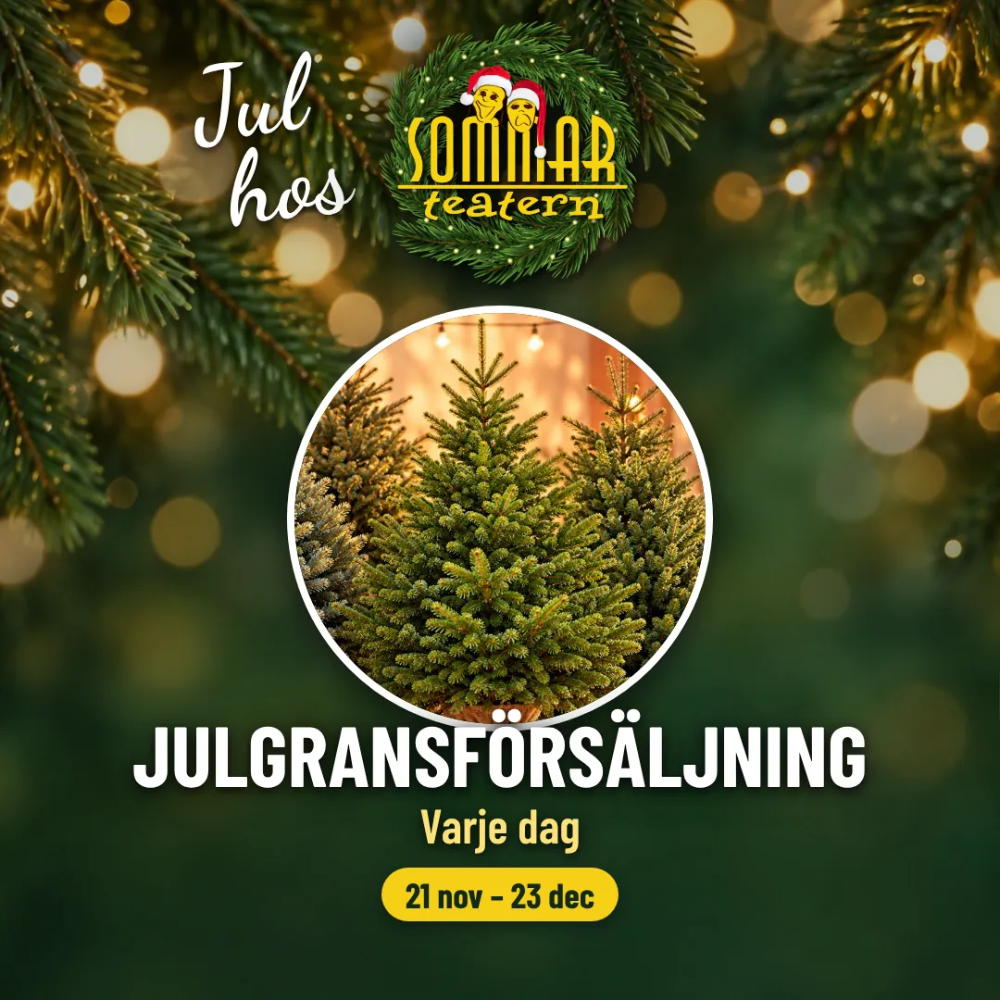

21 november – 23 december 2026
Hitta din perfekta drömgran hos oss i Öja — granar av kvalitet, granris, kransar och grantomtar.

Julgransförsäljning
Här står granarna uppradade, redo för dig att känna på, jämföra och hitta just din perfekta drömgran. Vi har granar av kvalitet i alla storlekar – och utöver granar säljer vi granris, kransar och grantomtar.
På helgerna tänder vi grillen och bjuder in till enkel men härlig julstämning med doften av nygrillad korv.
Förbeställning
Du kan förbeställa din gran både som privatperson och företag. Skriv till oss så hjälper vi dig.